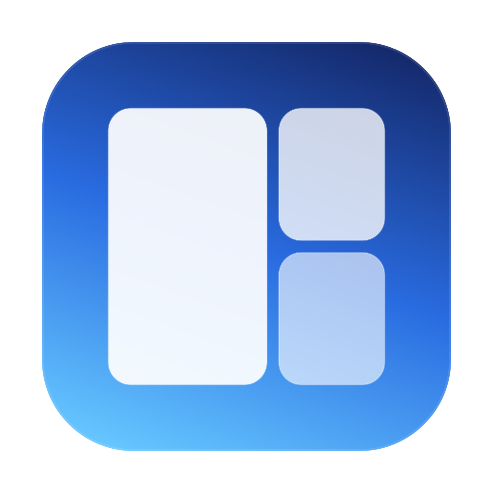

Native macOS clone of Windows FancyZones. Define zones on every display, snap any window into them, and have windows return to their zones the next time they open.
Everything you'd expect from a FancyZones-style window manager, plus a few macOS-specific touches.
Translucent overlay over every screen. Draw, move, resize, split and delete zones with the mouse.
Focus, Halves, 3 Columns, 2/3 Rows, 2×2 Grid, 3×3 Grid, Priority Grid. Pick a different layout per screen.
Drag a divider between two zones and both resize together. Smart delete fills the gap with adjacent neighbours.
⌃⌥1 through ⌃⌥9 snap the focused window to zone 1…9 on its current screen.
Hold the configured modifier (default ⇧ Shift) while dragging a window. Drop into a zone — done.
Recurring apps + window titles return to their assigned zone automatically the next time they open.
Add visual breathing room between snapped windows. Default 4 pt, presets 0–24 pt, or a custom value.
Chrome, Edge, Brave, Safari, Firefox, Arc, Opera, Vivaldi are excluded from auto-restore by default — their own session restoration stays intact.
Modern SMAppService-based toggle. Live status indicator in the status-bar menu.
No Dock icon, no persistent main window. Lives quietly in the menu bar until you need it.
.zip matching your Mac (run uname -m to check — arm64 for Apple Silicon, x86_64 for Intel).MacWindowZone.app into /Applications.Every gesture in one screen.
| Editing zones | From the menu bar — click Edit Zones… |
| Create a zone | Click + drag on empty area |
| Move a zone | Drag inside it |
| Resize a zone | Drag an edge or corner (adjacent zones move with it) |
| Split vertically | ⇧ Shift + click inside a zone |
| Split horizontally | ⌃ Control + click inside a zone |
| Delete | Select, then Delete (neighbours absorb the space) |
| Reset current screen | ⌘ Cmd + R |
| Exit editor | Esc or click the Done button |
| Snapping windows | |
| Snap focused window | ⌃ Ctrl + ⌥ Opt + 1 through 9 |
| Snap by drag | Hold ⇧ Shift, drag a window, drop into a zone |
| From menu | Snap Focused Window ▸ [screen] ▸ [zone] |
To move and resize other apps' windows we use macOS' Accessibility API. That's the only way to drive windows of apps we didn't write ourselves. No keystroke or screen capture happens.
No. Zero network requests. Everything (zone definitions, window memory) lives in ~/Library/Application Support/MacWindowZone/.
Attaching AX observers and calling setFrame on a browser during its startup can disrupt its own tab/session restoration. Manual snap (hotkey, Shift+drag, menu) still works for browsers — only the silent auto-restore is opted out.
The builds are ad-hoc signed (no paid Apple Developer ID). Right-click the app → Open the first time to bypass Gatekeeper, or build from source — the project is small enough to read end-to-end.
Open an issue or a pull request. The main branch is protected — PRs only.
MIT. Do whatever you want with it.